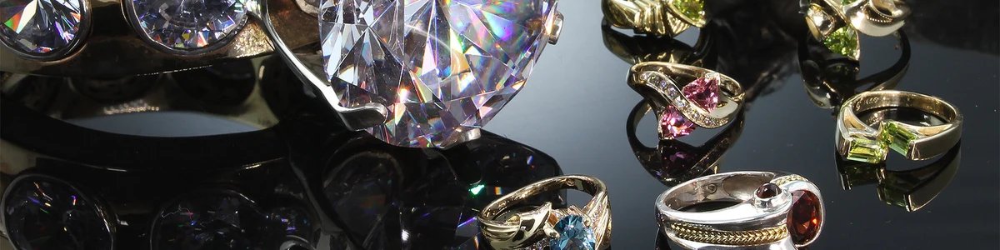

.jpg)
Why Restore Jewelry?
Restoring jewelry ensures its beauty, durability, and sentimental value are preserved for generations. Proper care also enhances its brilliance and prevents wear and tear.
Tips for Jewelry Restoration
- Clean gently: Use warm soapy water and a soft-bristled toothbrush to clean dirt and grime.
- Inspect settings: Check for loose stones or damaged prongs before wearing or cleaning.
- Polish carefully: Use a jewelry polishing cloth to restore shine to metals.
- Avoid harsh chemicals: Keep your jewelry away from household cleaners and perfumes.
- Store safely: Use soft pouches or lined boxes to prevent scratches and tarnish.
Tricks for Jewelry Care
Keep your jewelry looking like new with these tricks:
- Use baking soda and water for a gentle yet effective cleaning solution.
- To untangle chains, use baby powder and a pin to carefully separate knots.
- Regularly check for wear and tear to prevent costly repairs later.
- For pearls, wipe them with a damp cloth after each wear to remove oils and dirt.
